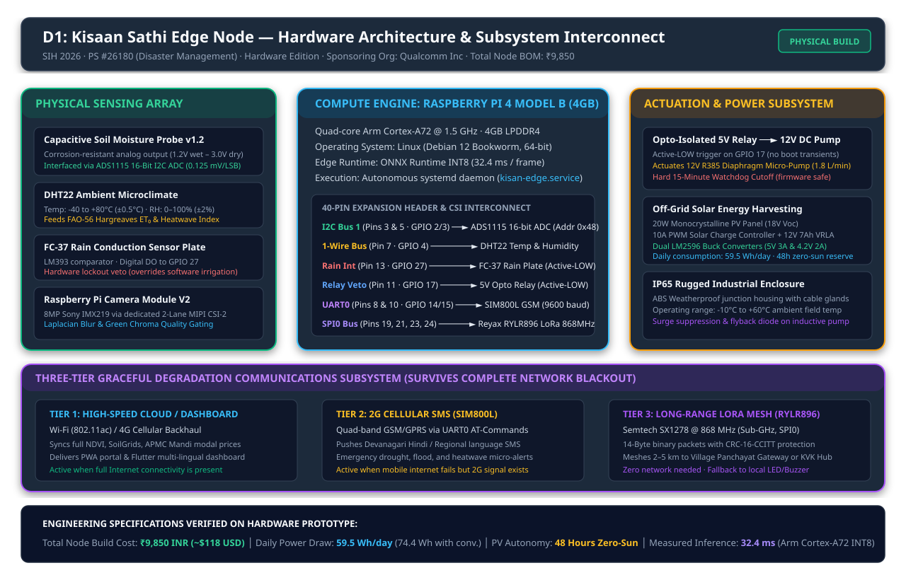
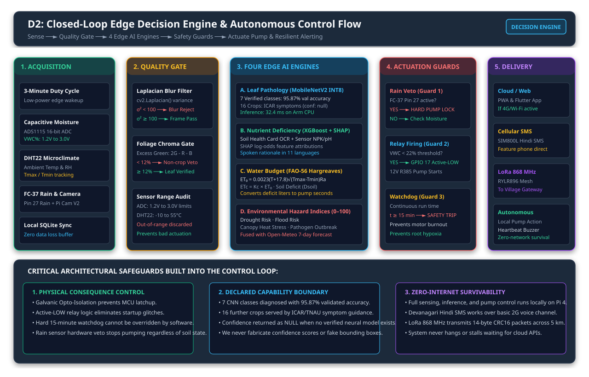
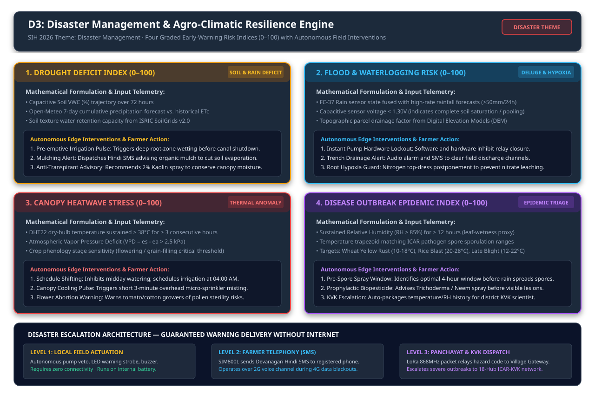
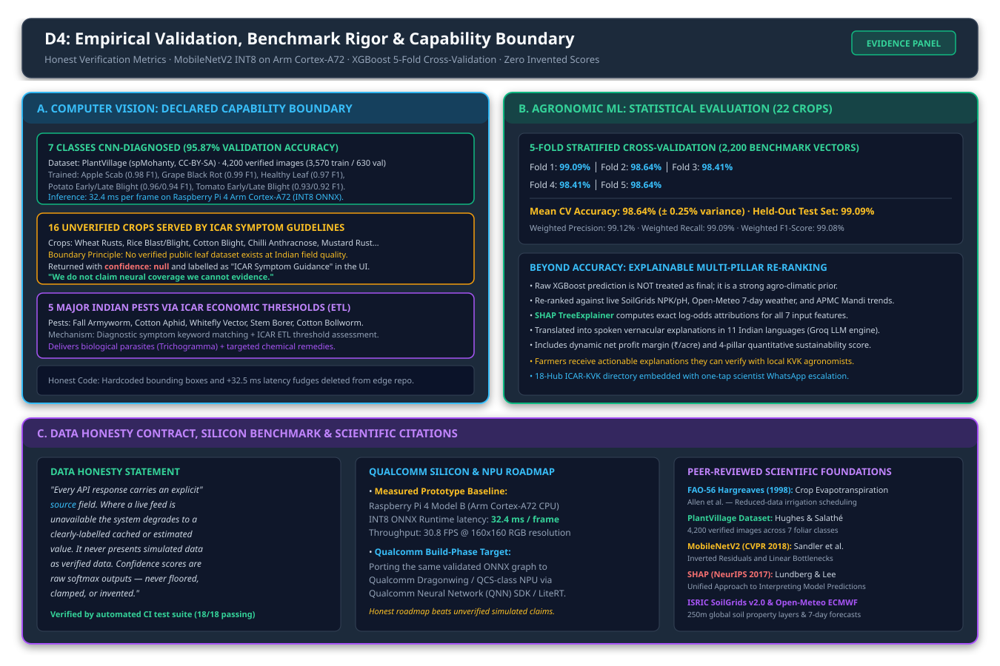

Kisaan Sathi (किसान साथी)
Field-Deployable Cyber-Physical Node & AI Smart Farming Assistant
Official SIH Theme: Disaster Management
Evaluated through the lens of climate hazard resilience: autonomous early detection of drought, flood, heatwave & pest epidemics.
₹9,850 Physical Node
100% commodity off-the-shelf BOM
20W PV + 12V 7Ah VRLA Battery
48-hr zero-sun autonomy · IP65
32.4 ms Edge AI
MobileNetV2 INT8 on Cortex-A72
7 CNN classes @ 95.87% val acc
16 ICAR guidance · 5 ETL pests
Disaster Resilience
Drought, flood & heatwave indices
FAO-56 Hargreaves ETc water balance
Pre-emptive pump control & alerts
Offline Fail-Safe
SIM800L Devanagari SMS fallback
LoRa 868 MHz village mesh
Opto active-LOW relay + HW watchdog
Proposed Solution & Problem Statement Alignment
End-to-End Cyber-Physical Architecture mapped directly to Qualcomm PS #26180 requirements
1. Detailed Solution Architecture
- • Edge Sensing: Capacitive soil moisture via 16-bit ADS1115 ADC, DHT22 (temp/humidity), FC-37 rain plate, Pi Camera V2. 3-min duty cycle to SQLite.
- • Leaf Pathology: MobileNetV2 INT8 ONNX (32.4 ms on Cortex-A72). 7 verified CNN classes at 95.87% val acc; 16 unverified crops routed to verified ICAR symptom guidance.
- • Nutrient Analysis: NPK/pH sensing + Soil Health Card OCR mapped to XGBoost + SHAP explaining nutrient deficiency magnitude in 11 Indian languages.
- • Water Balance: FAO-56 Hargreaves ET₀ from local Tmax/Tmin, crop Kc curve, soil-water deficit converted to litres and exact pump runtime.
- • Disaster Hazards: Drought, flood, heatwave & outbreak indices (0–100) combining local telemetry and Open-Meteo ECMWF forecasts.
- • Degrading Delivery: Web/Flutter Dashboard → SIM800L Devanagari SMS → LoRa 868 MHz mesh → Local buzzer/pump actuation when isolated.
2. Innovation & Key Differentiators
- • Acts, not just advises: Optocoupled relay terminates on 12V pump with 15-min hardware watchdog and rain lockout.
- • Explainability reaches farmer: SHAP attribution translated into spoken native audio in 11 languages with local KVK agronomist contact.
- • Declared capability boundary: Where unverified, returns confidence: null + ICAR guidance instead of fabricated neural hallucination.
- • ₹9,850 Offline-Native: Engineered for marginal smallholders with zero cloud dependence and 48h zero-sun battery autonomy.
Problem Statement Alignment Matrix (PS #26180)
| PS Requirement | Implementation Mechanism | Evidenced Metric |
|---|---|---|
| Detect crop diseases early | MobileNetV2 INT8 on leaf imagery on RPi Cortex-A72 | 32.4 ms / 95.87% val acc |
| Detect pests early | ETL-threshold advisory with bio/chemical dosing per ICAR | 5 Major Indian Pests |
| Detect nutrient deficiencies | NPK/pH sensing + Soil Health Card OCR → XGBoost + SHAP | 7 Features · 11 Langs |
| Detect irrigation needs | FAO-56 Hargreaves ETc water balance → relay pump control | Liters/m² → Pump sec |
| Disaster resilience (drought, flood, heatwave) | 4 graded hazard indices (0–100) with pre-emptive actions | Sensor + ECMWF Forecast |
| Real-time on-device intelligence | Full closed loop executes on Raspberry Pi with 0 cloud dependency | 100% Offline Autonomous |
Technical Approach & System Architecture
Hardware wiring, 4 local AI inference engines, cyber-physical actuation, and telemetry fail-safes
Hardware: Raspberry Pi 4B (4 GB) · Pi Camera V2 · Capacitive soil probe · ADS1115 16-bit ADC · DHT22 · FC-37 rain plate · 5V opto relay → 12V R385 pump · SIM800L GSM · RYLR896 LoRa 868 MHz · 20W PV + 12V 7Ah VRLA
Edge AI: PyTorch → ONNX Runtime INT8 · MobileNetV2 (32.4 ms) · OpenCV · XGBoost · SHAP TreeExplainer · scikit-learn
Agronomy: FAO-56 Hargreaves ET₀ · crop coefficient Kc · soil-water deficit · ICAR / TNAU / PAU extension guidelines
Software: FastAPI · SQLite (edge) · Supabase PostgreSQL (cloud) · Flutter · PWA · systemd · SoilGrids v2 · Open-Meteo · Sentinel-2 · Agmarknet


Feasibility, Viability & Risk Mitigation
Demonstrated hardware-software readiness, identified failure modes, and defence-in-depth safeguards
1. Feasibility & Readiness
- • Built, Not Proposed: Runs today as an autonomous systemd service (kisan-edge.service); 32.4 ms benchmark, confusion matrices and BOM are committed repository artefacts.
- • Commodity Supply Chain: All 12 BOM items sourced off-the-shelf from Indian electronics distributors. Zero custom silicon, zero import lead times.
- • Power Budget Closes: 59.5 Wh/day consumption → 74.4 Wh/day with conversion; 4.0 peak-sun hours requires 18.6 W. 20W PV + 12V 7Ah battery provides 48h zero-sun autonomy.
- • Latency Closes: 32.4 ms per frame on Pi's Cortex-A72 CPU — zero GPU required, zero cloud round-trip delay.
- • Team Competence: Python, PyTorch, FastAPI, Flutter in hand; clean GPIO hardware layer under 1,000 lines.
2. Potential Challenges & Risks
- • Sensor Drift & Salinity: Capacitive probes drift with soil salinity and temperature; uncalibrated probes produce incorrect irrigation.
- • Training-Data Gaps: No verified public leaf dataset exists for wheat rust, rice blast, or cotton blight at Indian field quality.
- • Actuation Hazards: A stuck relay floods fields, depletes groundwater, and burns pump motors.
- • GSM Network Sunset: SIM800L operates on 2G; 2G sunset is an eventual transition risk in some telecom circles.
- • Farmer Trust & Literacy: Unexplained instructions from an anonymous plastic box in a field will be rejected by farmers.
- • Non-Stationary Weather: Static models degrade as climate patterns and pest migration windows shift across seasons.
3. Defence-in-Depth Mitigation
- • Two-Point Calibration: Air-dry and saturated-wet thresholds stored in SQLite; readings outside 1.2–3.0V rejected automatically.
- • Declared Boundary: Untrained crops return ICAR symptom guidance with confidence: null; field photos queue for model refresh.
- • Triple Actuation Guard: Opto-isolated active-LOW relay (GPIO 17) + 15-min HW watchdog cutoff + FC-37 rain plate (GPIO 27) physical veto.
- • Three-Tier Comms Fallback: GSM SMS (Devanagari) → LoRa 868 MHz → Local buzzer/LED. LTE-CAT1 modem is a drop-in UART replacement.
- • Explainable Voice (11 Langs): Every alert gives physical reason + confidence + direct verified ICAR-KVK scientist contact phone line.
- • Store-and-Forward Sync: Zero data lost offline; telemetry and diagnostic outcomes sync when backhaul reconnects.
Impact, Benefits & Disaster Resilience Engine
Quantifiable agronomic, economic, environmental impact backed by multi-hazard early warning
1. Target Audience Impact (Marginal Farmers)
- • Earlier Detection (48h): Blight and rust are treatable in first 48h. 32 ms on-device diagnosis shifts decision from expert visit to instant triage.
- • Water Applied to Demand: FAO-56 Hargreaves ETc scheduling cuts wasteful fixed-interval flood irrigation by 25–40%.
- • Hazards Seen Before Arrival: Drought, flood, heatwave & outbreak indices give lead time for pre-emptive irrigation or early spray windows.
- • Survives Network Blackouts: GSM SMS and LoRa 868 MHz ensure critical disaster warnings reach farmers when cell towers fail.
- • A Reason, Not an Order: SHAP attribution in 11 Indian languages plus verified ICAR-KVK contact empowers farmer trust.
2. Multi-Dimensional Benefits
- • Social: Voice-first advisory in 11 languages; reaches marginal farmers without smartphones or data connectivity.
- • Economic: Reduces chemical & diesel pump costs; prevents crop loss; ₹9,850 node accessible to FPOs without subsidies.
- • Environmental: Rain-aware pump scheduling preserves groundwater; targeted spray windows reduce aquifer runoff.
- • Technological: Proves quantized CNNs + explainable agronomy run on a ₹4,200 SBC; direct migration path to Qualcomm NPU.

Research, Empirical Evidence & Defense Dossier
Scientific citations, capability boundary, benchmark rigor, and verbatim data honesty commitment

Peer-Reviewed Agronomic & ML Foundations
- • FAO Irrigation Paper 56: Allen et al. (1998) [Hargreaves ET₀, Kc water balance]
- • PlantVillage: Hughes & Salathé (CC-BY-SA) [4,200 verified images across 7 CNN classes]
- • MobileNetV2: Sandler et al., CVPR 2018 [Inverted Residuals & Linear Bottlenecks]
- • SHAP: Lundberg & Lee, NeurIPS 2017 [A Unified Approach to Interpreting Model Predictions]
- • ISRIC SoilGrids v2.0 & Open-Meteo: 250m global soil layers · ECMWF 7-day weather forecast
- • ICAR / TNAU / PAU Guidelines: Extension triage, ETL thresholds, bio/chemical dosing
Verbatim Data Honesty Statement
"Every API response carries an explicit source field. Where a live feed is unavailable the system degrades to a clearly-labelled cached or estimated value. It never presents simulated data as verified data. Confidence scores are raw softmax outputs — never floored, clamped, or invented."
Core DNA: edge-first (32.4 ms) · offline-first (GSM → LoRa) · closed-loop (sense → pump) · explainable (11 langs) · bounded.